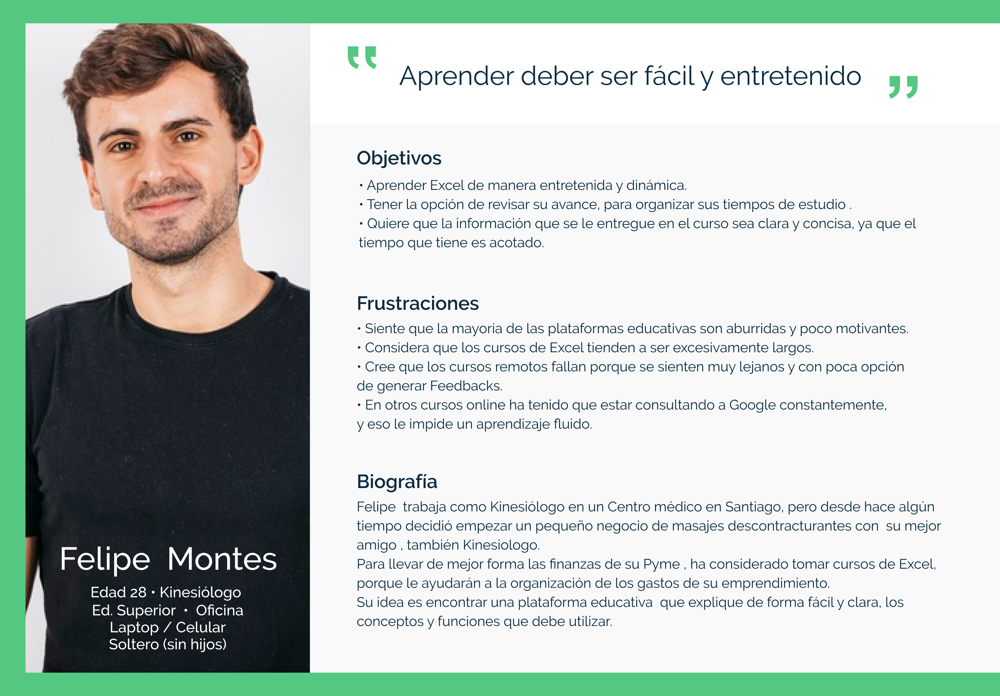
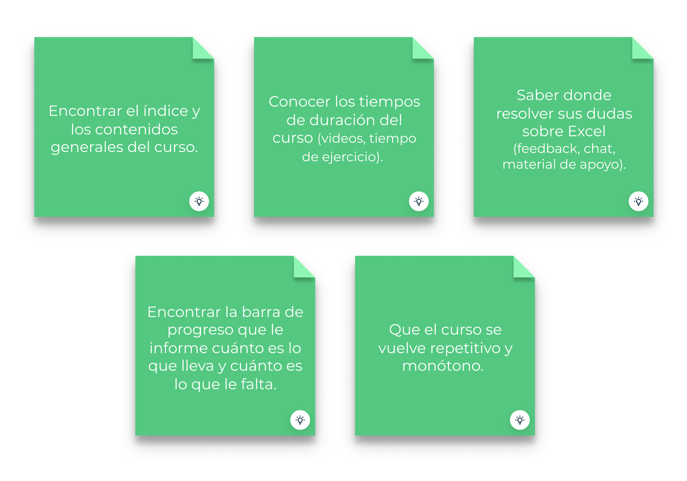
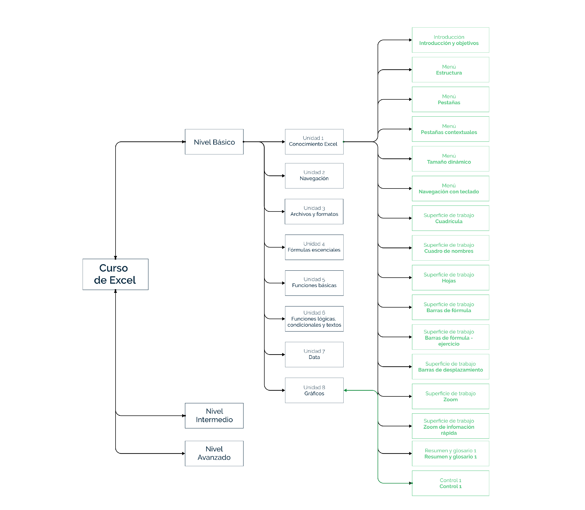
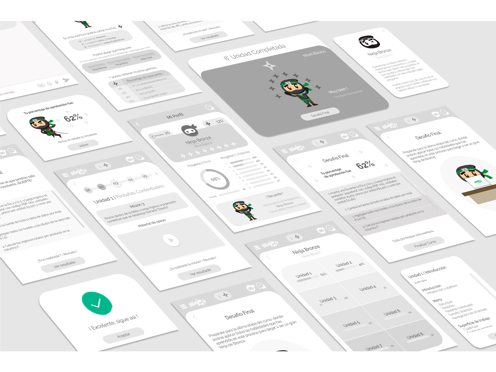
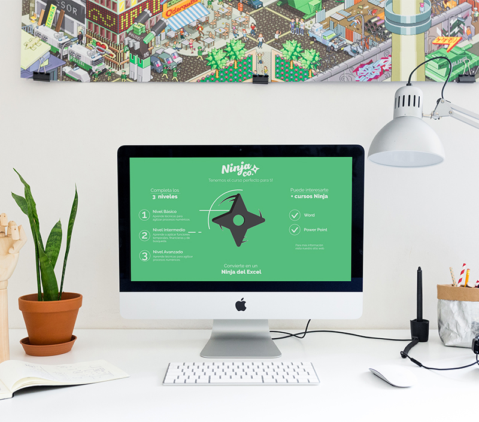

Ninja Company
El desafío de este proyecto consistía en rediseñar de manera disruptiva la UX/UI del curso de Excel que imparte la startup Ninja Company, aplicando estrategias de gamificación.
Rol
- User Research
- Interaction Design
- Visual Design
- Prototyping
Research
“La información y botones es extremadamente confusa, no sé cuáles son mis objetivos”
“Me gustaría poder ver mi avance, no sé dónde voy”
“Hacer más dinámico e interactivo el aprendizaje, tiende a volverse monótono”
Fueron los comentarios mas representativos de los usuarios que entrevistamos, encuestamos y testamos en la primera etapa de investigación. Para complementar aún más la inmersión decidimos realizar un análisis heurístico, un benchmark, un customer journey map y un user persona.
User persona
Nuestro alumno destacado es Felipe y él está buscando una plataforma donde pueda realizar un curso de Excel, de manera fácil y entretenida. Considera que por el poco tiempo que dispone el curso debiese ser muy intuitivo y accesible.

Customer Journey Map
En el viaje de Felipe podemos ver cuáles son los puntos de dolor que siente en la experiencia actual con el curso, y es ahí donde detectamos las oportunidades de mejora e intervención en el producto.

Mapa de afinidad
Para reforzar y validar las oportunidades de mejora detectadas en el curso de Excel, debemos contrastar todos los hallazgos que recopilamos en la primera etapa de research, para eso realizamos un mapa de afinidad, donde hacemos el match entre contenidos.

Hallazgos
Dentro de los principales descubrimientos y puntos prioritarios de mejora, podemos destacar los siguientes:

Gamificación
Con los puntos de mejora definidos es necesario definir la estrategia de gamificación que sea adecuada a las oportunidades que debemos trabajar. Considerando como objetivos principales:
1. Bajar el porcentaje de deserción de los alumnos del cursos.
2. Mejorar la experiencia de aprendizaje para obtener alumnos promotores.
En gamificación se debe definir tipo de jugador, eje motivacional, tipo de diversión, y aplicar el modelo MDA (Mechanics, Dynamics and Aesthetics).

Propuesta
Rediseñaremos toda la UX/UI del curso de Excel, de acuerdo a todos los lineamientos que obtuvimos en las primeras etapas de empatizar y definir. Consideramos que existen muchos puntos de mejoras, nosotras comenzaremos con los principales para subir el porcentaje de usabilidad. Las iteraciones son parte de los procesos futuros.
Sitemap
Antes de diseñar el primer sketch debemos definir el sitemap con los contenidos que vamos a usar.

Wireframe
Con el mapa de los contenidos del sitio comenzamos a armar los primeros wireframes del producto, un wireflow e interacciones, para luego testear algunas partes que necesitan iteración.

Prototipo de alta definición
Con los primeros acercamientos a los usuarios en el diseño de wireframes, y considerando las iteraciones, comenzamos a armar la propuesta final.
Usamos la paleta de color corporativa de Ninja Company, considerando siempre que el complemento tuviera una línea visual relacionada con el sitio web que actualmente están desarrollando.
